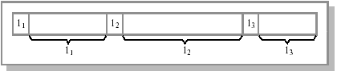
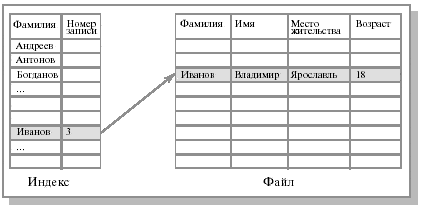

| Тема 1. Общие сведения о файлах. | ||
| Назад | ||
|
Имена файлов Файлы представляют собой абстрактные объекты. Их задача - хранить информацию, скрывая от пользователя детали работы с устройствами. Когда процесс создает файл, он дает ему имя. После завершения процесса файл продолжает существовать и через свое имя может быть доступен другим процессам. Правила именования файлов зависят от ОС. Многие ОС поддерживают имена из двух частей (имя+расширение), например progr.c ( файл, содержащий текст программы на языке Си) или autoexec.bat ( файл, содержащий команды интерпретатора командного языка). Тип расширения файла позволяет ОС организовать работу с ним различных прикладных программ в соответствии с заранее оговоренными соглашениями. Обычно ОС накладывают некоторые ограничения, как на используемые в имени символы, так и на длину имени файла. В соответствии со стандартом POSIX, популярные ОС оперируют удобными для пользователя длинными именами (до 255 символов). Типы файлов Важный аспект организации файловой системы и ОС - следует ли поддерживать и распознавать типы файлов. Если да, то это может помочь правильному функционированию ОС, например не допустить вывода на принтер бинарного файла. Основные типы файлов: регулярные (обычные) файлы и директории (справочники, каталоги ). Обычные файлы содержат пользовательскую информацию. Директории - системные файлы, поддерживающие структуру файловой системы. В каталоге содержится перечень входящих в него файлов и устанавливается соответствие между файлами и их характеристиками ( атрибутами ). Мы будем рассматривать директории ниже. Напомним, что хотя внутри подсистемы управления файлами обычный файл представляется в виде набора блоков внешней памяти, для пользователей обеспечивается представление файла в виде линейной последовательности байтов. Такое представление позволяет использовать абстракцию файла при работе с внешними устройствами, при организации межпроцессных взаимодействий и т. д. Так, например, клавиатура обычно рассматривается как текстовый файл, из которого компьютер получает данные в символьном формате. Поэтому иногда к файлам приписывают другие объекты ОС, например специальные символьные файлы и специальные блочные файлы, именованные каналы и сокеты, имеющие файловый интерфейс. Эти объекты рассматриваются в других разделах данного курса. Далее речь пойдет главным образом об обычных файлах. Обычные (или регулярные) файлы реально представляют собой набор блоков (возможно, пустой) на устройстве внешней памяти, на котором поддерживается файловая система. Такие файлы могут содержать как текстовую информацию (обычно в формате ASCII), так и произвольную двоичную (бинарную) информацию. Текстовые файлы содержат символьные строки, которые можно распечатать, увидеть на экране или редактировать обычным текстовым редактором. Другой тип файлов - нетекстовые, или бинарные, файлы. Обычно они имеют некоторую внутреннюю структуру. Например, исполняемый файл в ОС Unix имеет пять секций: заголовок, текст, данные, биты реаллокации и символьную таблицу. ОС выполняет файл, только если он имеет нужный формат. Другим примером бинарного файла может быть архивный файл. Типизация файлов не слишком строгая. Обычно прикладные программы, работающие с файлами, распознают тип файла по его имени в соответствии с общепринятыми соглашениями. Например, файлы с расширениями .c, .pas, .txt - ASCII-файлы, файлы с расширениями .exe - выполнимые, файлы с расширениями .obj, .zip - бинарные и т. д. Атрибуты файлов Кроме имени ОС часто связывают с каждым файлом и другую информацию, например дату модификации, размер и т. д. Эти другие характеристики файлов называются атрибутами . Список атрибутов в разных ОС может варьироваться. Обычно он содержит следующие элементы: основную информацию (имя, тип файла ), адресную информацию (устройство, начальный адрес, размер), информацию об управлении доступом (владелец, допустимые операции) и информацию об использовании (даты создания, последнего чтения, модификации и др.). Список атрибутов обычно хранится в структуре директорий (см. следующую лекцию) или других структурах, обеспечивающих доступ к данным файла. Организация файлов и доступ к ним Программист воспринимает файл в виде набора однородных записей. Запись - это наименьший элемент данных, который может быть обработан как единое целое прикладной программой при обмене с внешним устройством. Причем в большинстве ОС размер записи равен одному байту. В то время как приложения оперируют записями, физический обмен с устройством осуществляется большими единицами (обычно блоками). Поэтому записи объединяются в блоки для вывода и разблокируются - для ввода. Вопросы распределения блоков внешней памяти между файлами рассматриваются в следующей лекции. ОС поддерживают несколько вариантов структуризации файлов. Последовательный файл Простейший вариант - так называемый последовательный файл. То есть файл является последовательностью записей. Поскольку записи, как правило, однобайтовые, файл представляет собой неструктурированную последовательность байтов. Обработка подобных файлов предполагает последовательное чтение записей от начала файла, причем конкретная запись определяется ее положением в файле. Такой способ доступа называется последовательным (модель ленты). Если в качестве носителя файла используется магнитная лента, то так и делается. Текущая позиция считывания может быть возвращена к началу файла (rewind). Файл прямого доступа В реальной практике файлы хранятся на устройствах прямого (random) доступа, например на дисках, поэтому содержимое файла может быть разбросано по разным блокам диска, которые можно считывать в произвольном порядке. Причем номер блока однозначно определяется позицией внутри файла. Здесь имеется в виду относительный номер, специфицирующий данный блок среди блоков диска, принадлежащих файлу. О связи относительного номера блока с абсолютным его номером на диске рассказывается в следующей лекции. Естественно, что в этом случае для доступа к середине файла просмотр всего файла с самого начала не обязателен. Для специфицирования места, с которого надо начинать чтение, используются два способа: с начала или с текущей позиции, которую дает операция seek. Файл, байты которого могут быть считаны в произвольном порядке, называется файлом прямого доступа . Таким образом, файл, состоящий из однобайтовых записей на устройстве прямого доступа, - наиболее распространенный способ организации файла. Базовыми операциями для такого рода файлов являются считывание или запись символа в текущую позицию. В большинстве языков высокого уровня предусмотрены операторы посимвольной пересылки данных в файл или из него. Подобную логическую структуру имеют файлы во многих файловых системах, например в файловых системах ОС Unix и MS-DOS. ОС не осуществляет никакой интерпретации содержимого файла. Эта схема обеспечивает максимальную гибкость и универсальность. С помощью базовых системных вызовов (или функций библиотеки ввода/вывода) пользователи могут как угодно структурировать файлы. В частности, многие СУБД хранят свои базы данных в обычных файлах. Другие формы организации файлов Известны как другие формы организации файла, так и другие способы доступа к ним, которые использовались в ранних ОС, а также применяются сегодня в больших мэйнфреймах (mainframe), ориентированных на коммерческую обработку данных. Первый шаг в структурировании - хранение файла в виде последовательности записей фиксированной длины, каждая из которых имеет внутреннюю структуру. Операция чтения производится над записью, а операция записи переписывает или добавляет запись целиком. Ранее использовались записи по 80 байт (это соответствовало числу позиций в перфокарте) или по 132 символа (ширина принтера). В ОС CP/M файлы были последовательностями 128-символьных записей. С введением CRT-терминалов данная идея утратила популярность. Другой способ представления файлов - последовательность записей переменной длины, каждая из которых содержит ключевое поле в фиксированной позиции внутри записи (см. рис. 1). Базисная операция в данном случае - считать запись с каким-либо значением ключа. Записи могут располагаться в файле последовательно (например, отсортированные по значению ключевого поля) или в более сложном порядке. Метод доступа по значению ключевого поля к записям последовательного файла называется индексно-последовательным.
 Рис. 1. Файл как последовательность записей переменной длины. В некоторых системах ускорение доступа к файлу обеспечивается конструированием индекса файла. Индекс обычно хранится на том же устройстве, что и сам файл, и состоит из списка элементов, каждый из которых содержит идентификатор записи, за которым следует указание о местоположении данной записи. Для поиска записи вначале происходит обращение к индексу, где находится указатель на нужную запись. Такие файлы называются индексированными, а метод доступа к ним - доступ с использованием индекса. Предположим, у нас имеется большой несортированный файл, содержащий разнообразные сведения о студентах, состоящие из записей с несколькими полями, и возникает задача организации быстрого поиска по одному из полей, например по фамилии студента. Рис. 2 иллюстрирует решение данной проблемы - организацию метода доступа к файлу с использованием индекса.
 Рис. 2. Пример организации индекса для последовательного файла. Следует отметить, что почти всегда главным фактором увеличения скорости доступа является избыточность данных. Способ выделения дискового пространства при помощи индексных узлов, применяемый в ряде ОС (Unix и некоторых других, см. следующую лекцию), может служить другим примером организации индекса. В этом случае ОС использует древовидную организацию блоков, при которой блоки, составляющие файл, являются листьями дерева, а каждый внутренний узел содержит указатели на множество блоков файла. Для больших файлов индекс может быть слишком велик. В этом случае создают индекс для индексного файла (блоки промежуточного уровня или блоки косвенной адресации).
|
||
| Конспект подготовлен Бакулиным А. М. 2012 год. | ||